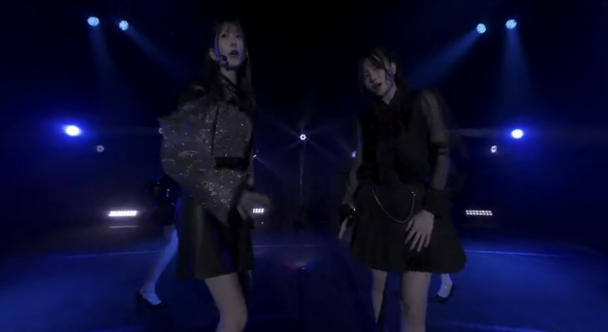

潟上市が後援しているためか、キッチンカーが４台も出ていました。
ステージ前にあ列〜か列まで６列増えていたので、６００人の座席があったのでは、ないかな！
全２０公演の中で一番のキャパだったのは、頷けます。
MC 自己紹介

お題「秋田といえば、悪い子のところにやってくる「なまはげ」ということで、なまはげに怒られないよう最近した「良いこと」のアピールをお願いします！
平田侑希
：何でもない日にお母さんにコスメをプレゼントしたこと。これからもちょっとずつ親孝行をできるようにがんばりたい。
長友彩海
：「ドボーンひとりじめ！」のカードゲームアプリで２週連続、+2，+3と出したら、私の次の人が大泣きスタンプを出していたので、次に+２が出せたけど、嫌われたくないから、出さなかったこと。その人、最後に「ありがたぐち」のスタンプを出して、上がられたので良かったかなと、思います。
佐藤綺星
：ショッピングモールで「お姉ちゃん」と呼ばれ、洋服を引っ張られたのですけど、
知らない子だったのですよ。私、妹ですし。迷子だったみたいだったので、絶対お母さんに逢わせてあげようと、一緒に３０分くらいいたら、迷ってしまい、結局迷子センターにごめんねと言って導いてあげたこと。今日は、天使の日ということで、羽ばたきながら歌います。
岩立沙穂
：「は～い、まあ早すぎ、は？、ほ！、すごい、はやい、どうしよう、いったん発声練習するね。秋田の皆さん、発声練習するね。私に続いて言ってくださ～い♡。やっほー（やっほー）、さっほー（さっほーーー）、長い。さっほーこと、岩立沙穂です。あろがとうございます。そうなんです。本日天使の日に３０歳のお誕生日迎えました。（おめでとうございます）ありがとうございます。すご～い、きっと初めて来たよという方もいらっしゃると思うのですが、温かく迎えてくださり、ありがとうございます。よく見る私のサイリウムカラーになっている。よく見ると。ありがとうございます。最近良いことをあまりしてないので、秋田を絶対盛り上げないとなまはげが怒りに来ちゃいそうなので、来ないように頑張っていきます。」
岩立沙穂さんの自己紹介動画


徳永羚海
：駐輪場で男性が自転車をバアッと倒したので、一緒に拾ったことです。（拾った？？）直しました。、元の場所に戻しました。
布袋百椛
：一緒に夜ご飯を食べに行ったときに、麻辣湯（まーらーたん）を両親に奢ったこと。
小栗有以
：道をよく聞かれるので、役に立ちたいから一緒に調べて、送り届けるみたいな。
それじゃなくて歩いていたら（え！それじゃないの）、違う違う、いっぱいあるの。歩いていたら前の人が落としたんですね。それがチケットなんです。電車とかそういうの。走って遠くまで届けたら、喜んでくれて、その喜んだ顔をみたらうれしくなったので、これからも人助けをしたいと思います。
工藤華澄
：今日は、朝早く起きて、神社に参拝をしてきました。御朱印をもらって今日の公演がうまくいきまようにお願いしてきました。
永野芹佳
：よく外国人に間違われるのは置いといて、ワンピースの渋谷の麦わらストアに行こうとしたら、外国人に「渋谷タワー プリーズ」みたいに言われて、あそこかもと指さして教えた。私は良い子なので、道に迷ったら、声かけてください。
下尾みう
：いいことをたくさんしているのですが、例えば、お客さんが服を試着するときにハンガーから落としてしまうことがあるのですが、私はそれをすべて直します。とか、えりいの髪がじゃまそうにしていたのをどかしました。ということで、えりいと一緒になまはげヘアーにしています。
村山彩希
：電車のホームで飲みすぎて体調が悪そうにしていたので、たまたま手に持っていた水が一口も飲んでいなかったので、あげました。（かっこいい）ちゃんといいことしました。
千葉恵里
：集合場所に早くついたので、薬局に寄ろうとしたら、小学生の女の子が肘が血まみれでポケットチッシュで押さえていて、半泣きだった。その子がキズパワーパッドとか絆創膏の前に立っていて、欲しいんだなぁと思って、「これ買う？」と言ったら、「お金あるんで大丈夫です」と言った。（こみはるツッコミお金あるんかい）「本当に大丈夫？」と聞いても同じ返答だったので、自分のお茶だけ買ったら、薬局の外で、半泣き状態で立っていた。また「買う？」と尋ねたら、「本当にお金あるんで、大丈夫です」言われて（こみはるツッコミ お金あるんかい）、助けることができなかった。なまはげパワーで頑張る
込山榛香
：外国の方から電車でよく聞かれる。その駅が終電だったら、「ナウ トレイン フィニッシュ フィニッシュ コ゚―」と教えると「OK OK」と分かってくれたり、隣の人に聞かれて、私の方が後に降りる駅だと、「まえ シー シー」駅が止まるたびに「ストップ」、「ネクスト コ゚―」と教えると、めちゃくちゃ分かりやすいみたいで、感謝される。
秋田県がおばあちゃんの出身地でして、秋田のおかげで今私がここにたてているので、感謝しています。
山内瑞葵
；先日麻辣湯に並んでいたら、ポツポツと雨が降ってきたので、母と二人で日傘をさしていたら、後ろの方が何も持っていなかったので「よかったら私達入るので、使ってください」と日傘を貸したことです。私は、シンプルに見えるけど、あきたこまちヘアーにしています。稲ヘアーです。
山口結愛
：高校の宿題を1つ終わらせました。英語を３０分で終わらせました。
武藤小麟
：沙穂さんがshowroomでカウントダウンの配信をしていたので、ケーキをコンビニで買ったのですが、ローソクが無かったんですよ。そこでパーンと思いついて、ポッキーを３０本立てればいいんだと気づいて、立ててお祝いしたことです。私のお母さんも秋田県出身で縁があるので思い出を作りたいと思います。このヘアーは、秋田犬ヘアーです。秋田犬みたいにかわいく踊りたい思います。
「岩立沙穂 記念企画コミュニティ」の皆さんが、岩立沙穂さんの自己紹介のとき、観客席の下手側、センター、上手側でそれぞれのフライヤーを掲げるように企画しました。素晴らしいですね。
5.クサイモノだらけ
岩立沙穂、佐藤綺星、平田侑希


6.地下鉄のTeddy boy
長友彩海、布袋百椛、徳永羚海
7.一人想い
工藤華純、村山彩希、小栗有以、永野芹佳


9.負け男
山口結愛、千葉恵里、込山榛香、武藤小麟

MC ここのMCに出ていないメンバーを代弁して！
村山彩希、平田侑希、徳永羚海、工藤華純

村山彩希
：他の準備している１２人の子たちもMCしたいよとなっていると思います。今日は、私達でない１２人の話を代わりにお届けしたいと思います。
工藤華純
：山口結愛ちゃんに聞いたんだけど、普段お話を聞けない村山彩希さんと徳永羚海さんにお聞きしたいとのことだったんですが、「村山彩希さんにどうしたら、かわいくなれますか？」（彩希：本当にそう思っている？）と聞きたいと言っていました。
村山彩希
：１３年いるからそれなりに、でもゆいち、まだ若いから垢抜けしかないじゃない。気にしないでいいと思う。
工藤華純
：じゃ、垢抜けるためにしたことってありますか？
村山彩希
：いっぱいステージ立った。1300回立った。（すご～い、かっこいい、すてき）これ、ゆいゆいなんかに聞く質問じゃない？
工藤華純
：そんなことないです。
村山彩希
：今、笑ってじゃない。悪いぞ。
工藤華純
：徳永羚海さんに質問なんですけど、どうやって課題を終わらせてますか？
村山彩希
：楽屋で聞きなよ。
平田侑希
：確かに。
徳永羚海
：気合で！出された時から終わらせる。先延ばしせずに出されたときに終わらせる。心がけています。
村山彩希
：昨日、たまたまゆいちと楽屋一緒で、「なんかさあ、最近美顔器を買ったんだけど、届いてみたら脱毛機だった」と話してい、めっちゃいいやつ買っちゃんだって！あの年で何万って、結構なお小遣い貯めているわけで・・・。間違えちゃったらしい。笑いとまらなかった。（面白すぎる）
平田侑希
：下尾みうさんの話なんですけど、昨日、岩手の公演だったじゃないですか。ファンの方をお見送りしているとき、郡司さんのうちわを持っている方がいたらしくて、みうさんが「あ！懐かしい」と指差したら、そのファンの方の真後ろに郡司さんがいたらしいです。
村山彩希
：いろいろつっこみ所があるけど、下尾らしいエピソードじゃない。
徳永羚海
：永野芹佳さんから皆さんに質問があるらしくて、私が代わりに質問させていただくんですけど、昨日岩手公演があって、そのまますぐに秋田に移動したんですけど、そのときに秋田で福岡の博多ラーメンを食べたらしくて、皆さんに聞きたいですけど、秋田でおいしいラーメンを教えてほしいとのことでした。
村山彩希
：食べちゃったのもう？
徳永羚海
：食べちゃったらしいです。
村山彩希
：（会場から女の人が・・・末廣［すえひろ］ラーメン）末廣ラーメン、だってよ、せりちゃん。
（袖から永野芹佳登場）
永野芹佳
：末廣行きま～す。ありがとうございます。
村山彩希
：あとさぁ、れみたんの話、れみたん話していい。さっほー、今日誕生日じゃん。さっほーにれみたんが、「年齢不詳ですね」と言いたかったの、でも「年齢詐称ですよね」
って・・。（会場大爆笑）一回謝っとき、そこで・・・。悪気はないよね。
徳永羚海
：本当に「年齢不詳」と言いたかったんですよ。でも「年齢詐称」しか頭になくて・・・。
村山彩希
：なんでそっち出てきちゃうのかな？
徳永羚海
：まあ、年齢で合ってるかなと思って、年齢不詳という感じで言いたかったんですけど。
（袖から岩立沙穂登場）
徳永羚海
：頭に年齢不詳という言葉で出てきて
村山彩希
：詐称でしょう。不詳と言いたかったんでしょう。
徳永羚海
：そうです。
村山彩希
：自分でもちんぷんかんぷんになってきた。
徳永羚海
：ごめんなさい。
岩立沙穂
：大丈夫。ありがとう。ありがとう。ばいばい。（岩立沙穂 引っ込む）
村山彩希
：やさしいですよ。皆んな、スタンバイできていると思うので、続いての企画に行きたいと思います。・・・出張公演特別バージョンをお送りしたいと思います。
MCの中の岩立沙穂さんに関する動画
12.恋するフォーチュンクッキー


秋田〜きりたんぽ〜なまはげ〜あきたこまち〜🥠
秋田〜なまはげ〜泣く子はいねが〜👹👹
本日もご清聴ありがとうございました！！ by 山内瑞葵の投稿より
13.君の嘘を知っていた

17.AKB参上！